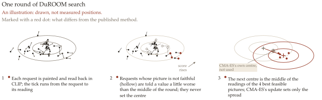

Q10 How does DuROOM search work?
The search
The score rewards distance from what exists, measured on the painted picture, and it has no term for whether the picture is still a painting. If the search follows that score alone, and only records each picture’s fidelity, it climbs away from the reference wherever the decoder lets it. We call this the free search. DuROOM search, which gives the result we report, counts a picture only when it is feasible, i.e., faithful as the loop reads it while it runs. Each round it sets its centre to where the 4 best feasible pictures read back in CLIP. So it climbs only where its pictures still come back near what it asked for, and nearly every picture it paints is faithful (Q12). In both, what the search can return is bounded by what the decoder can paint.
Both are built on CMA-ES, an evolution strategy (Hansen and Ostermeier 2001) that keeps 2 things, a centre and a spread (Related work says how it searches). Each round it samples 32 requests around the centre and ranks them by the smaller of their 2 rescaled scores (n in Algorithm 1). Why the smaller of the 2 scores? A picture then ranks high only when both observers score it high (Q7 compares it with their mean). A score is rescaled by taking away the median score of the reference and dividing by the median absolute deviation of the reference’s scores, as the 2 observers’ scores sit on different scales. It moves the centre toward the better half (in DuROOM search the restart replaces this move), and the better 16, the library’s default half, reshape the spread, which can widen up to twice its first value.123
What the search takes in.
- The reference: 2,048 works from before 1900, at most 3 per artist, each repainted by the decoder from its own vector, so we compare pictures with pictures.4
- A start: one work from before 1900, drawn by the run’s seed, whose vector is the first centre of the search (CMA-ES calls it the mean).5
- The 2 observers, DINOv3 and SigLIP, which read every picture for its distance. CLIP gives the coordinates the search moves in, and its reading of each picture gives the picture’s fidelity and, in DuROOM search, the place the centre moves to. A fourth encoder, AIMv2, is not read in the loop.
- The decoder of Q8, which paints a CLIP vector at one fixed length.
- The bar of far, in each observer, as Q7 defines it.6
The step is the angle between a vector the search tries and the one it stands on. Along the shift and its 2 axes, the picture lags behind the request up to about 30 degrees, and past that it drifts from the request (Q8). The search’s own steps go in random directions, which the decoder barely follows (Q12). DuROOM search draws its steps at a scale that starts at about 16 degrees, about half of the free search’s first step, and can widen to about 30. The scale is not a limit on one request: each request is a Gaussian sample around the centre, so a single step can be larger. The 16 is our choice.
Why not step along the shift of Q3, the one direction the works after 1900 lean along? A search steered by it would be handed where later work went.7 So we read along it only afterwards, to see whether anything the search makes moved the way the corpus did.
Algorithm 1 gives DuROOM search as it runs. The search climbs the score in the 2 observers, so the observers steer it: among feasible pictures the smaller of the 2 rescaled scores, n, sets the rank, and the 4 with the highest n restart the centre.
Faithful is its filter: a picture that is not feasible is given a value near the middle of the feasible ones, a little worse the further it is over the faithful line, and it never sets the centre or is admitted. The bar and the minimum gap decide which pictures are admitted, and an admitted picture counts in every later d. The manifold line, the dates of the nearest real works, the shift, and far in CLIP or in AIMv2 are read afterwards.
Algorithm 1. DuROOM search
Input: the reference R, with its median m, scale s and bar b in each observer; a start; the decoder; DINOv3, SigLIP and CLIP.
Settings: 60 rounds, no early stop; 32 requests a round; a first step scale of 0.0104 per coordinate, about 16 degrees, kept at or under 0.0208, about 30 degrees (a scale for sampling, with no limit on a single request’s angle); the decoder at length 17.53, guidance 3, 50 steps, its seed fixed by run, round and slot; faithful line 0.7788; 15 nearest; minimum gap 0.575 in DINOv3.
Output: the set A of admitted pictures, and for every request its picture, its CLIP reading, its fidelity and its distances.
- c ← the start’s CLIP vector at unit length; paint c
- A ← ∅; start CMA-ES at c with the first step8
- for round t = 0 to 59 do
- draw 32 requests around c; scale each to unit length
- for each request r do
- tell CMA-ES −n for each feasible p
- tell it, for each p that is not feasible, the median of those values + (f − 0.7788)²11
- update the step and spread of CMA-ES
- ▷ restart from the readings
- c ← unit mean of the CLIP readings of the 4 feasible p with highest n
- if t ≥ 1 then
- for each feasible p with d > b in both observers, in slot order, do ▷ over the bar in both observers
- if p is over 0.575 in DINOv3 from the start’s picture and all of A then ▷ the minimum gap
- A ← A ∪ {p}
- if p is over 0.575 in DINOv3 from the start’s picture and all of A then ▷ the minimum gap
- for each feasible p with d > b in both observers, in slot order, do ▷ over the bar in both observers
- return A and the record of every request
So a picture is admitted when it is feasible, over the bar b in both observers, and more than the minimum gap, 0.575 in DINOv3, from the start’s picture and from every picture already admitted. Far is read in both observers. The gap, which only keeps near-copies out of the admitted pictures, is measured in DINOv3 alone.12 The free search starts from 3 other works. In the loop it differs in 3 places: every picture is feasible, its centre moves by CMA-ES’s own update (no restart), and its first step scale is about 30 degrees, which can widen to about 50. That 50 is a scale for drawing requests. The free search’s requests still end nearly at right angles to their start (Q12).
DuROOM search keeps only CMA-ES’s spread, as the restart puts its centre where the decoder did paint (Figure 1). Why restart from 4? It is our choice, and the admitted count moves with it. In the 15 runs of Q12, no round of the search or its 2 controls had fewer than 4 feasible pictures. We ran the search restarted from 1, 4, 16 and every feasible picture of the 32, at the same 5 starts, one run each (Table 1). A hit is an admitted picture that is also faithful on the stored CLIP reading and covered by later works (Q12). Restarted from 1, the search admits 3 times as many pictures as from 4, and has 2.4 times as many hits, more at every start. It paints about as many far and faithful pictures, 45% of its pictures against 46%, but 3 times as many of them are off the manifold. Of its far and faithful pictures, 11% have a large leftover share with a work dated 1900 or later within the manifold line and none dated before, against 30%. Each restart from 1 moves the centre 32 to 35 degrees, past the 30 degrees at which a picture starts to drift from its request (Q8), and it paints nearly 5 times as many pictures that are not feasible. The runs of Q11 and Q12 restart from 4.
| Restart from | Pictures admitted | Not feasible, of 9,600 | Restart’s move of the centre, a round, from where CMA-ES had put it |
|---|---|---|---|
| 1 picture | 425 | 1,181 | 32 to 35 degrees |
| 4 pictures (DuROOM search) | 142 | 245 | 18 to 21 degrees |
| 16 pictures | 64 | 31 | 10 to 13 degrees |
| every feasible picture | 43 | 74 | 9 to 12 degrees |

The choices, and what each rests on
Every number in Algorithm 1 is a choice, so here is each one with the evidence we have for it and what we did not test (Table 2).13
| Choice | What we took | Evidence | Not tested |
|---|---|---|---|
| Observers | DINOv3 and SigLIP, far in both | With each rule’s bar set so that it calls far 71 of 24,627 earlier works, far in both calls far 11,181 later works, and one observer alone 8,381 or 8,513 (Q7) | The search with DINOv3 or SigLIP alone |
| Rank inside the loop | The smaller of the 2 rescaled scores | A picture ranks high only when both observers score it high. On real works their mean does as well (12,002 later works against 11,297) | The search with the mean |
| Neighbours | The mean of the 15 nearest | A later work outranks an earlier one about 90% of the time with 5, 10, 15 or 30 neighbours | What the loop admits with another number |
| Bar | The score that 99% of the reference lie below, one bar for all regions | Bars at 95, 98, 99 and 99.5% call far 28.5, 12.5, 5.5 and 2.7% of 512 works of 1900 to 1969. They call far 1.3, 0.5, 0.3 and 0.2% of 1,000 earlier works. Local bars catch a sixth to a half as many of the later works (Q7) | A search steered by a local bar |
| Reference | 2,048 repainted works, at most 3 per artist | Later works come in nearly the same order as against 28,404 works (rank correlation 0.97 and 0.96) | The cap on repainted pictures |
| Rounds and requests | 60 rounds of 32 | The median rescaled score of a round’s feasible pictures levels off from about the 11th round on, in all 3 loops, and 31 of the 120 hits come in the last 20 rounds | Other numbers |
| Step | Drawn at a scale that starts at about 16 degrees and can widen to about 30 | Past about 30 degrees a picture drifts from its request (Q8) | Another first step |
| Restart | From the 4 best feasible pictures | Table 1 | Hits when restarted from 16 or from every feasible picture; controls for the restart from 1 |
| Minimum gap | 0.575 in DINOv3 | The median distance from a reference picture to its nearest by another artist. In the 15 runs of Q12 it turned away 54, 12 and 30 pictures that had passed every other check, where the 3 loops admitted 142, 74 and 47 | The gap in SigLIP or in both |
| Decoder | Length 17.53, guidance 3, 50 denoising steps | 17.53 is the corpus’s median CLIP length. At guidance 10 instead of 3, image variations lands 0.047 to 0.070 farther from its source in CLIP, DINOv3 and SigLIP (every p under 10-7). We tried only 3 and 10 | Other numbers of denoising steps |
The controls
The 2 searches raise different questions, so they have different controls. For the free search we ask whether the score matters, and whether the search does better than random directions at its own angles. So its controls are random scores and random directions (Q12).14
In DuROOM search every picture comes from a loop that restarts from the decoder’s own pictures, and works the decoder repaints again and again, with no search, drift away from the works before 1900 (Q12). So we ask what the score adds to that loop, and what the score and the step add together. Both of its controls are variants of the search itself.15
- Random-score loop: what does telling the loop the real score do, at the same step sizes? It is the same loop told random scores. Round by round, it asks at the step sizes the search logged from the same start.16
- No-step loop: what does the loop paint with no step and no real score? Its step is so small that all 32 requests of a round are the centre itself. So each round only repaints the centre, and restarts from 4 feasible pictures picked at random.17
Every number from 5 starts on these pages is one run per start.18 We chose the pictures shown on these pages by eye or drew them at random, so they are examples and not a sample.
Next, the Results overview says what we found.
References
Footnotes
We use CMA-ES (pycma) in its diagonal form, which can stretch the spread along each of the 768 coordinates; the spread starts the same in all 768. In DuROOM search the step, sigma, starts at 0.0104 per coordinate, about 16 degrees through atan(sigma × sqrt(768)). The scale that rescales each score is fixed from the reference, so the admitted pictures cannot move it.↩︎
In DuROOM search the restart replaces CMA-ES’s own last move of the centre, along which pycma (version 4.4.4) places 2 requests of a round whose ranks decide whether the step grows or shrinks. We have not tested what this does to the step size.↩︎
A direction drawn evenly at random in 768 dimensions puts on average 39 of 768 parts of its squared length, about 5%, in any fixed set of 39 directions, so about 5% of a first step’s squared length lies in the 39 directions nearby works share most (Q1). This is arithmetic from the settings, not a measurement.↩︎
The 2,048 reference works come from 997 artists. The reference’s scores, with each work’s own artist left out, have a median of 0.654 in DINOv3 and 0.716 in SigLIP, and a median absolute deviation of 0.0715 and 0.0490, the m and s that rescale a score in Algorithm 1. The bar, the score that 99% of them lie below, is 0.961 in DINOv3 and 0.900 in SigLIP. Rescaled, it is 4.3 in DINOv3 and 3.8 in SigLIP.↩︎
The runs scored against today’s reference, which Q11 reports, use the same loop with today’s reference, 2,048 repainted works of every date, in place of the works before 1900, and start from 5 other works dated 1807 to 1931.↩︎
The chord counts every direction alike, while in CLIP the works vary unevenly across directions and by region (Q1).↩︎
Our diagonal form stretches the spread only along single coordinates, so a first spread along the shift would need another form: a full covariance, a basis rotated to hold the shift as a coordinate, or requests drawn in a chosen basis. We have not run any of these. The leftover was tried as the score: that loop picks more pictures with a large leftover share than DuROOM search by the same rule, 679 against 290, though not at every start.↩︎
We use CMA-ES (pycma) in its diagonal form, which can stretch the spread along each of the 768 coordinates; the spread starts the same in all 768. In DuROOM search the step, sigma, starts at 0.0104 per coordinate, about 16 degrees through atan(sigma × sqrt(768)). The scale that rescales each score is fixed from the reference, so the admitted pictures cannot move it.↩︎
On the loop’s reading, 99% of the reference pictures have a fidelity under 0.7788, the line that decides feasibility. The faithful counts on these pages take the fidelity from a second, stored CLIP reading of each picture, in 16-bit floats, on which the line is 0.7785, unless a sentence says it uses the loop’s reading. In the 15 runs of Q12 the 2 readings sit more than 2.6 degrees apart on 2 of 28,800 pictures. We have not established which reading is nearer the truth.↩︎
The mean of the 15 nearest is the distance novelty search takes (Lehman and Stanley 2011), where Q5 takes the 10th nearest alone; we have not compared the two. As the distance is a mean, a picture with 1 very close neighbour and 14 far ones can still pass, so the bar does not rule out a near copy of one reference picture. We have not counted how many admitted pictures have such a neighbour.↩︎
A picture that is not feasible is told a value about the middle of the feasible ones, so with 2 or more in a round, some can rank inside the better half that CMA-ES reshapes its spread from. None can set the centre or be admitted.↩︎
The bar is a mean over 15 distances, so a near-copy of the start’s picture or of a picture already admitted changes only 1 of the 15, and the bar cannot keep it out. The gap is applied last, to pictures that passed every other check. In the 15 runs of Q12 it turned away 54 of the search’s 9,600 pictures, 12 of the random-score loop’s and 30 of the no-step loop’s. In other runs of DuROOM search, from other starts, 97 to 100% of the far, faithful and covered pictures (Q12) that were not admitted failed on far, as the loop reads it with the admitted pictures counted in, and not on the gap.↩︎
The reference takes at most 3 works per artist. On stored works, with at most 2, 3, 5 or 10 works per artist or no cap, a later work outranks an earlier one 89.3 to 89.7% of the time in DINOv3 and 89.9 to 90.4% in SigLIP. On the 512 repainted works of 1900 to 1969, 10, 15 or 20 neighbours make 6.2%, 5.5% and 4.9% far, against 0.3% of 1,000 earlier works at each.↩︎
The free search ran from 3 starts. Its random directions are matched on the angle we asked for (Q12).↩︎
We ran no random-directions control with the restart.↩︎
As it is told random scores, its centre restarts from 4 feasible pictures picked at random. Its first round is the same 32 pictures as the search’s.↩︎
We also ran the no-step loop told the real score, in place of random scores, and report it in Q12.↩︎
All 15 runs of Q12 ran on one type of graphics card. On another type the same command gives a different run: from one other start, outside those runs, DuROOM search admitted 66 pictures where it had admitted 30, and the no-step loop’s counts differ by type too (appendix).↩︎